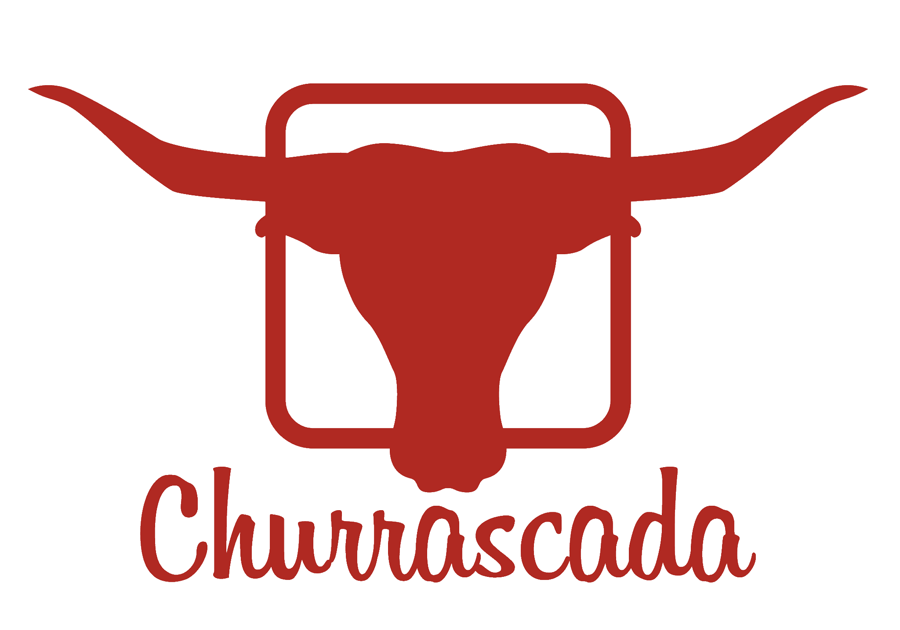

Churrascada
Carne assada, música e confraternização são as principais características desse consolidado festival gastronômico. A inspiração dos organizadores Rogério Betti, Gustavo Bottino e Felipe Aversa é o formato americano Meatopia, tido como o maior festival de churrasco do mundo. Nessa edição, os organizadores contam que reunir um evento que oferece suporte técnico a um festival gastronômico é a oportunidade única de celebrar o campo e a pecuária em meio ao universo urbano que a cidade de São Paulo representa. “Nosso intuito é transmitir aos participantes a ideia de comer um saboroso churrasco na fazenda com os amigos. É uma festa para comemorar a vida, comer bem e confraternizar”, diz Rogério Betti.
Clique aqui e adquira seu ingresso!